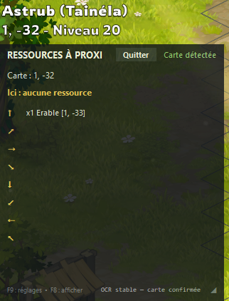

Projet personnel · Août 2026
Overlay pour Dofus
Un overlay qui affiche les ressources présentes sur les cartes à proximité du joueur, grâce à la lecture des coordonnées à l’écran et à une base de données locale.
Voir le projet sur GitHub
Le point de départ
Je jouais à Dofus à ce moment-là et je ne voulais pas garder une carte ouverte sur mon second écran. L’idée était donc d’afficher directement dans le jeu les ressources présentes sur les cartes alentour.
J’entendais beaucoup parler de l’IA. J’avais testé ChatGPT à sa sortie pour du PowerShell et j’en avais été très insatisfaite. Plusieurs années avaient passé : je voulais voir les progrès réalisés.
Quatre jours de « vibe coding »
Je me suis fixé une règle : ne jamais modifier une ligne de code à la main. Le projet a été entièrement « vibe codé » avec la version gratuite de ChatGPT, au fil de nombreux allers-retours pour décrire le besoin, essayer les propositions et demander des ajustements.
Le développement a pris quatre jours, suivis de deux jours de tests externes et de retours, fin août 2026.
Une base locale, sans appels sortants
Il a d’abord fallu trouver une base de données contenant les ressources du jeu. Comme ces données ne sont pas amenées à changer fréquemment, j’ai choisi de les stocker localement.
L’overlay consulte cette base pour afficher les ressources à proximité. Aucun appel vers l’extérieur n’est effectué pendant son fonctionnement.
Le défi de la lecture OCR
L’overlay lit les coordonnées du joueur à l’écran par reconnaissance optique de caractères (OCR), puis recherche dans sa base les ressources des cartes alentour.
La difficulté venait du fond animé derrière les coordonnées : ses couleurs sont parfois très claires, parfois très sombres. Il a fallu de nombreuses itérations pour obtenir une lecture fonctionnelle sur les différents formats et tailles d’écran.
La légèreté comme objectif
En plus de l’absence d’appels sortants, je voulais rendre l’overlay aussi léger que possible, avec les moyens du bord de ChatGPT gratuit. Le jeu tourne déjà : l’outil qui l’accompagne doit rester discret dans sa consommation de ressources.
Je suis assez satisfaite du résultat, même si de nombreuses optimisations peuvent très clairement être faites.
Pour les petites config : Voir la vidéo sur YouTube
Je n'ai pas utilisé d'autres IA plus avancées que ChatGPT (gratuit), dans le cas où des personnes seraient intéressées je pourrai faire un refactoring sur le code avec Claude, je pense qu'il doit y avoir pas mal à gagner, sinon en l'état je préfère garder cette vibe de l'outil utilisé (un mix de souffrance, de nostalgie et de satisfaction).